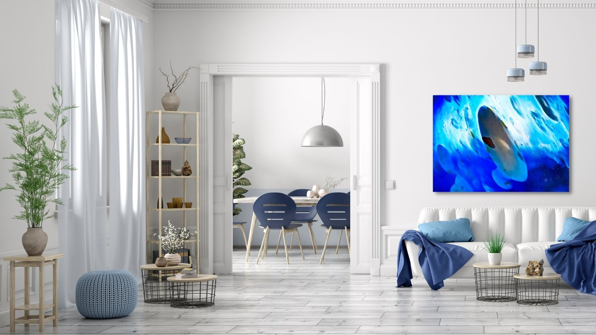
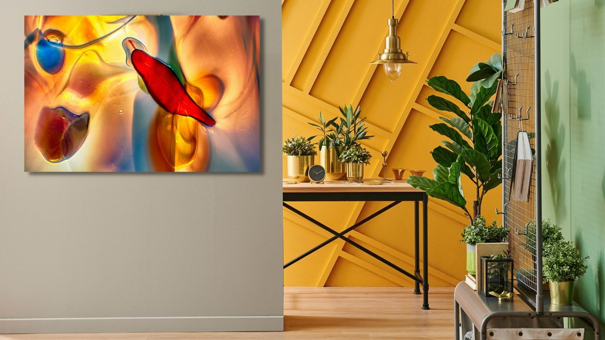

The Library · Omaste Witkowski
How To Create Unique Interior Designs With Glass Art

Glass Art Might Just Be The Bold Statement Your Interior Designs Need
Glass artwork is highly customized photography and as a result of the way it is created, this art form is endlessly customizable and can be incorporated into literally any type of interior design. The examples shown on this page are mostly saturated shades of many colors. Any of them can be customized for a more desaturated look. As you can see, this wall art style works well in every room of your home or office.
Glass Art Galleries
Each gallery of photos are created from one specific piece, or style of glass art and the pictured below represent two separate round glass ornaments and a tall glass vase. The color tones overall and how the glass was colored will both affect the end result of the photograph. Interestingly enough, how you change the angle of your lighting and whether or not you use natural light vs artificial light will affect the end products.
You can spend hours and hours in a glass art photo shoot, take hundreds, if not thousands of photographs and process them in a variety of ways. What this does is lend creativity and customization in every step. After you create these glass photographs, you can then use them in other mixed media designs.

Handblown Glass Up Close

Crystal Ball Gallery

Peacock Vase Gallery
Glass Art Can Work With Any Style of Interior Design or Decor in Any Room
Glass art pieces are a great choice for interior designs and decor because they can be mixed with any type of room and color scheme AND the color ranges can also be customized for a specific interior design project.
Add beauty and uniqueness to your home with custom made glass art that has been designed to add value and distinction to any home, office and/or project. The natural colors and warm energy can uplift, inspire and motivate the energy in any room.
Glass Art for Living Rooms

Glass Art for Bedrooms
Glass Art for Offices, Conference Rooms and Workspaces

Glass Art for Kitchens

Glass Art for Dining Rooms

Glass Art for Bathrooms

Glass Art for Entryways and Hallways

Find your own piece with the art adventure · Ask the gallery what fits your wall